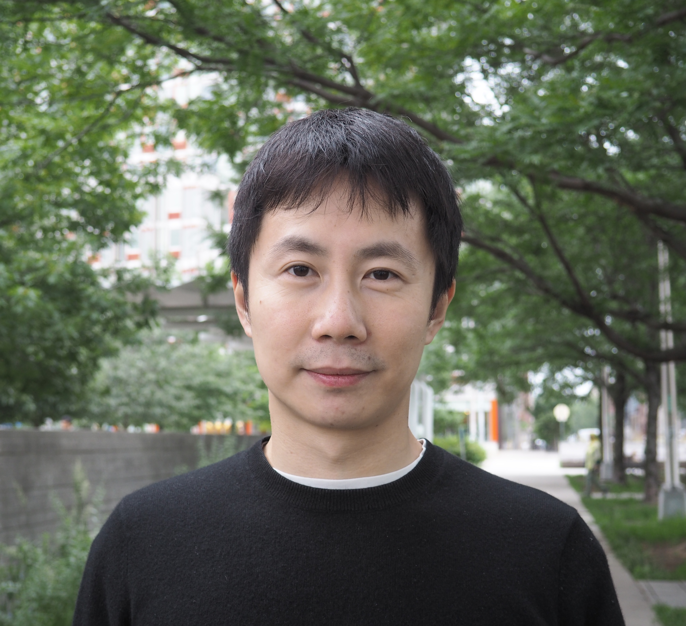

Yue Liu, Ph.D.

Principal Investigator
I am interested in understanding the neural circuit basis of fluid intelligence — how the brain generalizes from limited experience to solve new problems. My work combines computational modeling and theory to study how neural dynamics support flexible cognition.
Before joining FAU, I was a postdoctoral researcher in the lab of Xiao-Jing Wang at New York University, and earned my Ph.D. in Physics working with Marc Howard and Michael Hasselmo at Boston University. Before that, I studied Physics at Fudan University in Shanghai, China